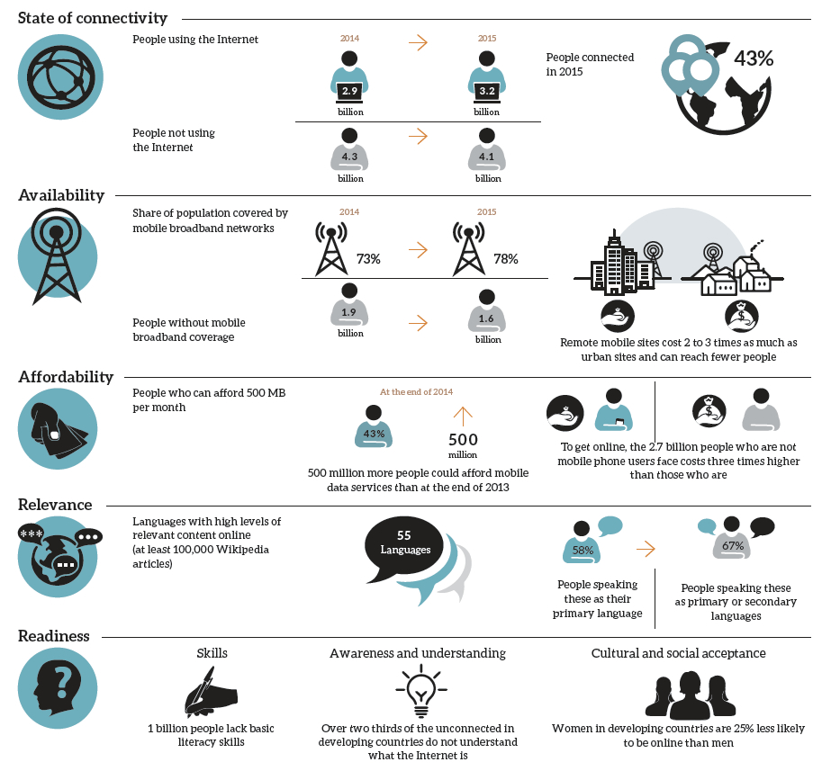
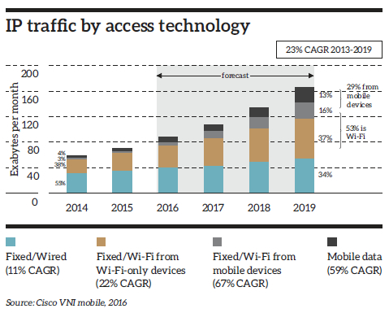
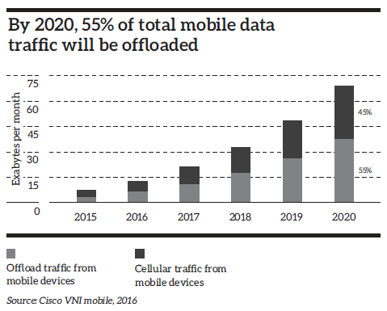
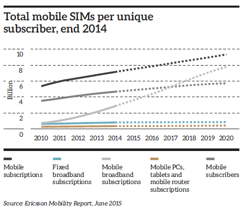
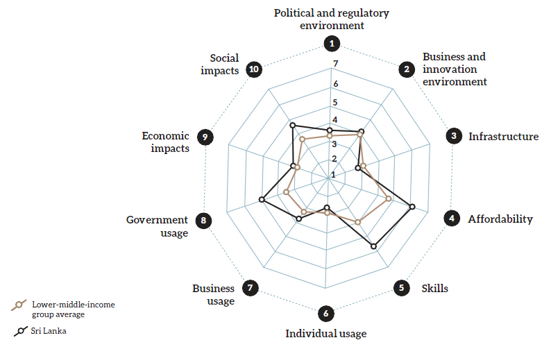

The world took yet another small step towards becoming fully connected in 2015. An estimated 3.2 billion people are now online, up from 2.9 billion in 2014, according to a new report published by Facebook. But this means that a further 4.1 billion people, over half of the world’s population, are without any Internet connection at all.
The Connect 2020 Agenda of the International Telecommunication Union (ITU) calls for at least 50% of developing nations’ households to have Internet access by 2020 and to reduce the cost and discrimination which is keeping many from being online. Without a coordinated approach to connectivity, however, the ITU estimates that nearly three billion people will remain offline in 2020, almost all of them in developing nations.

Source: State of Connectivity 2015 – A Report on Global Internet Access – Internet.org by facebook
Sri Lanka is among those that are ahead of the Broadband Commission’s global target for all countries to have a national broadband plan (NBP) by 2015. A national backbone network (NBN) based on optical fibre technology has already been developed and deployed by SLT. Nearly all major players are now investing heavily to capitalise on developments in broadband technology, with FTTx, VDSL vectoring, ADSL 2+ and both fixed and mobile 4G LTE technologies offering higher broadband speeds. Globally 4G is growing rapidly, with the GSM Association (GSMA) expecting 4G network infrastructure to account for much of the USD 1.7 trillion of expected investment by mobile operators worldwide during 2015-2020. Despite some operators experiencing decreases in revenues, most operators are continuing to invest in upgrades to their infrastructure and network consolidation.
Asia-Pacific now accounts for half of all mobile broadband subscribers. The rapid expansion of Asia-Pacific is squeezing other regions in terms of regional market shares. For example, Europe and the Americas both saw declining proportional shares of mobile broadband subscribers from 2014 to 2015 – despite absolute increases in the number of subscribers, Europe’s share fell from 16% to 14% and the Americas from 24% to 22%.
Traffic volumes on fixed networks will continue to dominate data traffic, including the traffic off-loaded to such fixed networks. With the exploding growth and impact of mobile devices and lifestyles, it is estimated that Wi-Fi traffic off-loaded to fixed networks from both mobile devices and Wi-Fi-only devices together, will account for more than half (53%) of total IP traffic by 2019, up from 41% in 2014. Some forecast global trends are given below.


Notes:
– Offload pertains to traffic from dual-mode devices (excluding laptops) over Wi-Fi or small-cell networks
– The prefix ‘exa’ is a decimal unit in the metric system denoting 1018 ( or 1,000,000,000,000,000,000)

The complexities of modern lifestyles have led to the increased dependency on broadband services for daily business, educational and social lives. Internet users are now generating content and uploading them onto the web to be shared within their circles of friends. This can only be done with the wide deployment of the broadband network.
Obviously, broadband has become the most critical infrastructure in modern society. Not content with the current broadband services on offer, consumers continue to demand greater digital economy. Sophisticated ICT infrastructure and services remains the only way to fulfil the insatiable demand for connectivity, while supporting parallel platforms for interactive television, distance learning, online education, e-Health, and opportunities for cloud computing, private business networking and much more at superior speeds, with higher quality and reliability.
| Measure | Value | Global ranking |
| Fixed broadband subscriptions per 100 capita | 2.6 | 114 |
| Mobile broadband subscriptions per 100 capita | 13.0 | 126 |
| Households with Internet % | 15.3 | 81 |
| Individuals using Internet % | 25.8 | 122 |
Source: The State of Broadband 2015 report by The Broadband Commission for Digital Development - ITU and the UNESCO
| Strategy | Benchmarks* | Sri Lanka’s status | |
| Availability |
|
Needs much Improvement |
|
| Affordability |
|
On target |
|
| Applicability |
|
Needs much improvement |
|
*Source: Broadband Commission targets and international research
We see from the above that Sri Lanka’s broadband prices are affordable, and yet the penetration is low compared to GNI per capita capability. The primary barriers are availability and applicability, particularly in the dearth of public apps and services that add value to day-to-day lives of masses.

Source: The Global Information Technology Report 2015 | 2.1: Country/Economy Profiles – Page 237
From the above we see that Sri Lanka scored more than the average for the lower-middle-income group of countries in eight of the 10 pillars, but was below average on ‘infrastructure’ and ‘individual usage’ scores.
Sri Lanka moved to 65th place out of 143 economies, improving from its 76th place in 2014 in terms of network readiness. The country ranked highest among SAARC nations.
Despite the low penetration noted earlier, entry level fixed broadband charges in Sri Lanka are amongst world’s lowest. The country is also one of the first in the world to narrow the gap between the bandwidth offered to the subscriber and the actual speed delivered as per quality of service (QoS) regulation.
With ICT literacy at 40% (end 2013), Sri Lanka bagged the Prestigious ‘Offshoring Destination of the Year Award’ of the National Outsourcing Association Awards (NOAAS, UK) for the second successive year and was nominated for the third consecutive year in 2015.
Sri Lanka is emerging as a global IT business process outsourcing destination of choice in a number of key focus domain areas. The country is ranked among the Top 50 Global Outsourcing destinations by AT Kearney by climbing up five places to be ranked 16, demonstrating the remarkable forward momentum of the local ICT industry.
Also Sri Lanka ranked among Top 20 Emerging Cities by Global Services Magazine. As per the UN e-Gov Development Index, Sri Lanka has leapfrogged 41 places to be ranked 74 out of 192 countries in the world, showcasing the country’s tremendous advancement in the e-Government agenda.
With larger national budgetary allocations for ICT coupled with plans for ‘megapolis development’ we see the emergence of the ‘smart city’ concept taking place in Sri Lanka. A smart city aims to enhance the quality of life by using technology to improve the efficiency of services and meet residents’ needs. ICT allows city officials to interact directly in real-time with the community and the city infrastructure (such as departments, transportation, hospitals, schools and such like) and to inform what is happening in the city, how the city is evolving, and how to tackle inefficiency.
As over-the-top (OTT) companies like Netflix, Skype, Facebook and Google encroach on the telecom industry, operators need to find ways to counter the threat to traditional revenue streams of the telcos. However, OTT is not only a threat but also an opportunity in terms of drivers for Internet penetration and increasing usage. The options include defending one’s territory or finding ways to work with these new players. Either way, the telecom companies must put to use their distinct assets and capabilities to their best advantage, such as their wide fixed and wireless networks, their millions of customers and the fully-integrated customer data, logistics and other services they can offer.
According to Booz & Company (2013) operators can employ three possible strategies. The first involves developing advanced connectivity services in order to defend their core networking and infrastructure business. The second requires that they create new services such as data analytics and billing, which they can sell to businesses in different verticals. The third is to develop new apps and other services and offer them directly to consumers. None of these options are exclusive and operators need to consider and experiment with all of them. In all cases, the key is for operators to see the opportunities in developing the profit pools where their particular capabilities offer the greatest chances of success.